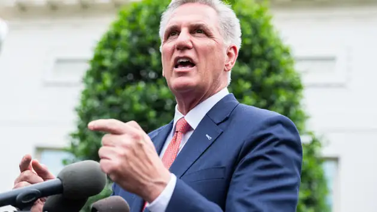

McCarthy says 'decisions have to be made' at debt ceiling meeting with Biden
Published: May 22, 2023 at 4:30 p.m. ET
The two leaders will meet at 5:30 p.m. ET at the White House with just 10 days left to head off a potential debt default.
House Speaker Kevin McCarthy said Monday that “decisions have to be made” at his meeting with President Joe Biden later in the day at the White House, with only 10 days to go until the U.S. risks default.
“We've got to have movement” in order to have progress toward a deal to raise the debt ceiling, McCarthy told reporters in the Capitol. “I know where I think people should be able to get to.”
McCarthy acknowledged that the reality of the legislative calendar has added more pressure to his meeting with Biden, which is set to take place in the Oval Office at 5:30 p.m. ET.
“I think we can get a deal tonight, we can get deal tomorrow, but you've got to get something done this week to be able to pass it [in the House] and move it to the Senate” in time to meet the June 1 deadline, he said.
The House is currently scheduled to leave for Memorial Day weekend, but McCarthy said he would keep the chamber in session as long as he needed in order to pass a bill. “We're going to stay and do our job,” he said.
McCarthy spoke after three hours of negotiations between White House and House Republican envoys on Monday. One of the GOP negotiators, Rep. Patrick McHenry, R-N.C., later said he was “concerned about getting a deal that can pass the House, the Senate, and signed by the president.”
“It's a complicated piece of math, it is,” McHenry told CNN. “We're at a very sensitive point here, and the goal is to get something that can be legislated into law,” he added.
McHenry was joined in the talks by Rep. Garret Graves, R-La. The White House team is comprised of presidential counselor Steve Ricchetti, Office of Management and Budget Director Shalanda Young and legislative affairs director Louisa Terrell.
Treasury Secretary Janet Yellen reaffirmed on Sunday that June 1 is the government's “hard deadline” to raise the debt limit or face a likely first ever national debt default.
“We expect to be unable to pay all of our bills in early June, and possibly as soon as June 1,” Yellen told NBC's “Meet the Press.”
“My assessment is that the odds of reaching June 15 while being able to pay all of our bills is quite low,” she said, with the caveat that there would always be uncertainty about exact revenue and payments.
Both Biden and McCarthy have acknowledged that one of the main sticking points in the talks remains the question of spending caps, a key GOP demand but a red line so far for the White House. Raising the debt limit would not authorize new spending, but Republicans have insisted on sweeping cuts to government outlays as part of a deal to hike the borrowing limit.
“The underlying issue here is that Democrats, since they took the majority, have been addicted to spending. And that's going to stop. We're going to spend less than we spent last year,” McCarthy said to reporters Monday morning in the Capitol.
Biden is hoping to reach a debt limit deal that would push the next deadline out past the 2024 presidential election. But House Republicans, who so far have endorsed only a one-year hike, say that if Biden wants more time, then he will need to agree to even more cuts.
Across-the-board cuts like these “make absolutely no sense at all,” Biden said Sunday in Japan, where he was attending the Group of Seven Summit. “It's time for Republicans to accept that there is no bipartisan deal to be made solely, solely, on their partisan terms.”